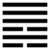

Thiên Thủy Tụng (訟 sòng)
Tự quái truyện đã cho Nhu là ăn uống, cho nên giảng rằng vì (vấn đề) ăn uống mà người ta sinh ra tranh nhau, rồi kiện nhau, cho nên sau quẻ Nhu là quẻ Tụng (có nghĩa là kiện cáo)
Thoán từ:
訟 ． 有 孚, 窒, 惕 ． 中 吉 ． 終 凶 ． 利 見 大 人 ． 不 利 涉 大 川．
Tụng: Hữu phu, trất, dịch. Trung cát, chung hung
Lợi kiến đại nhân, bất lợi thiệp đại xuyên.
Dịch: Kiện cáo vì mình tin thực mà bị oan ức (trất), sinh ra lo sợ (dịch). Nếu giỡ đạo trung (biện bạch được rồi thì thôi) thì tốt lành,nếu kiện cho đến cùng thì xấu. Tìm được bậc đại nhân (công minh) mà nghe theo thì chỉ có lợi, nếu không thì như lội qua sông lớn (nguy), không có lợi.
Giảng: Theo tượng quẻ này có thể Giảng: người trên ( quẻ Càn) là dương cương, áp chế người dưới,mà người dưới ( quẻ Khảm) thì âm hiểm, tất sinh ra kiện cáo, hoặc cho cả trùng quái chỉ là một người, trong lòng thì nham hiểm (nội quái là Khảm), mà ngoài thì cương cường (ngoại quái là Càn), tất sinh sự gây ra kiện cáo.
Thoán từ của Chu Công không hiểu hai cách đó mà cho quẻ này là trường hợp một người có lòng tin thực (hữu phu) mà bị oan ức, vu hãm, không có người xét rõ cho, cho nên lo sợ, phải đi kiện. Nếu người đó giữ đạo trung như hào 2 (đắc trung), nghĩa là minh oan được rồi thì thôi, thì sẽ tốt, nếu cứ đeo đuổi cho tới cùng, quyết thắng, không chịu thôi, thì sẽ xấu.
Quẻ khuyên người đó nên đi tìm bậc đại nhân công minh (tức hào 5 - ứng với hào 2, vừa trung,chính, vừa ở ngôi cao), mà nghe lời người đó thì có lợi; nếu không thì là tự mình tìm sự nguy hại, như lội qua sông lớn.
Đại tượng truyện đưa ra một cách giảng khác nữa: Càn (trời) có xu hướng đi lên; Khảm (nước) có xu hướng chảy xuống thấp, như vậy là trái ngược nhau, cũng như hai nơi bất đồng đạo, tranh nhau mà sinh ra kiện cáo. Và Đại tượng truyện khuyên người quân tử làm việc gì cũng nên cẩn thận từ lúc đầu để tránh kiện cáo.
Ý nghĩa các hào :
1. 初 六: 不 永 所 事, 小 有 言, 終 吉 ．
Sơ lục: Bất vinh sở sự, tiểu hữu ngôn, chung cát.
Dịch: Hào 1 âm: đừng kéo dài (vụ kiện) làm gì, tuy bị trách một chút, nhưng sau được tốt.
Giảng: Hào 1, âm nhu ở dưới, được hào 4 cương kiện ở trên ứng viện, tức là có chỗ dựa; nhưng đừng nên ỷ thế sinh sự kéo dài vụ kiện; có bị trách một chút thì cũng thôi, kết quả được biện minh, thế là tốt.
2. 九 二: 不 克 訟, 歸 而 逋. 其 邑 人 三 百 戶, 无 眚．
Cửu nhị: Bất khắc tụng, qui nhi bô. Kì ấp nhân tam bách hộ, vô sảnh.
Dịch: Hào 2, dương : không nên kiện, lui về mà tránh đi, ấp mình chỉ có ba trăm nóc nhà thôi (ý nói địa vị mình thấp, thế mình nhỏ), như vậy thì không bị họa.
Giảng: Trong phần I, chương IV, chúng tôi đã nói: các hào ứng với nhau (1 với 4, 2 với 5, 3 với 6) phải một dương một âm thì mới có “tình” với nhau, mới đứng vào một phe, viện trợ nhau, tức trường hợp hào 1 và hào 4 quẻ này; nếu cả hai cùng là dương hay là âm thì tuy ứng nhau đấy, nhưng có thể kị nhau, cũng như hào 2 và hào 5 quẻ này. Hai hào này đều là dương cả, cho nên coi là địch nhau, đứng vào hai phe ở trong quẻ tụng (kiện cáo).
Hào 2 ở dưới, trung chứ không chính, ở giữa nội quái là Khảm (hiểm) lại bị hai hào âm 1 và 3 vậy, nên thế yếu, muốn kiện hào 5 (vì 2 có tính dương cương) nhưng thế không địch nổi, vì 5 trung, chính lại ở ngôi cao. Dưới kiện trên khác gì trứng chọi đá, không nên, thà rút lui về, tránh đi còn hơn, như vậy không bị tội lỗi.
Tiểu tượng truyện còn dặn thêm: nếu dưới mà kiện trên, tai họa tới là tự mình vơ lấy đấy: hoạn chí xuyết (cũng đọc là chuyết, là đoát) dã:
Phan Bội Châu giảng hào này, dẫn việc Nguyễn Hoàng muốn kình với Trịnh Kiểm (sự thực Trịnh Kiểm muốn hại Nguyễn Hoàng, Nguyễn Hoàng sợ), cho người hỏi ý kiến Nguyễn Bỉnh Khiêm, Nguyễn Bỉnh Khiêm đáp: “Hoành sơn nhất đái, vạn đại dung thân”, có ý khuyên nên trốn tránh vào Nam cho thoát nạn; đó là ý nghĩa ba chữ “qui nhi bô” trong hào này.
3. 六 三 : 食 舊 德, 貞 厲, 終 吉 ． 或 從 王 事, 无 成.
Lục tam: Thực cựu đức, trinh lệ,
Chung cát; hoặc tòng vương sự, vô thành.
Dịch: Hào 3 âm, Cứ (yên ổn) hưởng cái đức (ân trạch) cũ của mình (Chu Hi hiểu là giữ cái nếp cũ), ăn ở cho chính đáng mà thường để lòng lo sợ thì kết quả sẽ tốt; nếu phải đi theo làm với người trên (chữ vương ở đây trở người trên, không nhất định là vua), thì cũng đừng mong thành công.
Giảng: Hào 3 đã âm nhu lại bất chính (vì hào âm mà ở ngôi dương, ở chông chênh trên cùng quẻ Khảm (hiểm), chung quanh đều là kẻ thích gây sự, kiện cáo (vì hào 2 và 4 đều là dương), cho nên 3 thường phải lo sợ (lệ), nếu hiểu vậy mà biết giữ gìn thì rốt cuộc sẽ yên ổn.
Hào 3 có hào 5 ở trên ứng và có “tình” với mình, 6 là dương cương lại là bề trên (ngôi cao), nên có khi lôi kéo 3 theo nó; trong trường hợp đó, 3 nên an phận thủ thường, cứ phục tùng 6, đừng mong thành công (chẳng hạn 6 muốn đứng ra kiện, kéo 3 theo thì 3 chỉ nên giúp 6 lấy lệ thôi, đừng ham lập công).
4. 九 四 : 不克 訟, 復 即 命, 渝, 安 貞 吉 ．
Cửu tứ: Bất khắc tụng, phục tức mệnh, du, an trinh cát.
Dịch: Hào 4, dương : không thể kiện cáo được, trở lại theo thiên mệnh (lẽ chính đáng), đổi ý đi, ở yên theo điều chính thì tốt.
Giảng: Hào này dương cương mà bất trung, bất chính, “tượng” một người ham kiện cáo. Nhưng không thể kiện ai được: kiện 5 thì 5 ở trên mình, ngôi tôn, không dám kiện; kiện 3 thì 3 nhu thuận, chịu thua trứơc rồi; kiện 2 thì 2 vừa cương, chính, trung, sáng suốt, đã tiên liệu rồi, không chịu kiện; còn 1 thì đã về phe với 4. Đành phải bỏ ý ham kiện đi, theo lẽ phải, ở yên, giữ điều chính, như vậy thì tốt.
5. 九 五 : 訟, 元 吉 ．
Cửu ngũ: Tụng, nguyên cát.
Dịch: Hào 5 dương : xử kiện hay đi kiện, đều rất tốt.
Giảng: Hào 5 này ở ngôi chí tôn, cương mà minh, trung và chính. Nếu là người xử kiện thì là bậc có đức, có tài (như Bao Công); nếu là người đi kiện thì gặp đựơc quan tòa có đức, có tài. Không gì tốt bằng.
6. 上 九 : 或 錫 之 鞶 帶, 終 朝, 三 褫 之．
Thượng cửu: hoặc tích chi bàn đái, chung triêu, tam sỉ chi.
Dịch: hào trên cùng, dương : (kiện ) may mà được cái đai lớn (của quan chức) thì trong một buổi sáng sẽ bị cướp ba lần.
Giảng: Hào dương này ở trên cùng quẻ Tụng là kẻ rất thích kiện, kiện tới cùng. Nó ở ngôi 6 là bất chính, cho nên dù có may ra được kiện, thì chẳng bao lâu cũng sẽ mất hết, rốt cuộc vẫn không lợi.
*
Quẻ tụng này Ý nghĩa các hào rất nhất trí, sáng sủa.
Trước sau chỉ là răn người ta đừng ham tranh nhau kiện cáo: hào 3 không kiện với ai, tốt; hào 2 muốn kiện mà sau thôi không kiện, cũng tốt; hào 1 bị kiện thì nên nhường nhịn một chút, rốt cuộc sẽ tốt, duy có hào 6 bằng kiện tới cùng thì dù có thắng, cũng hóa xấu.
Còn hào 5 diễn cái ý: có một Tòa án công minh thì phục cho dân biết bao.